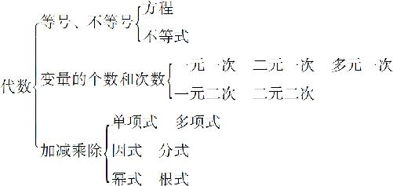

不知你有没有听说过这样一个故事：有三个年轻的建筑工人一起在工地上劳动，有一个记者采访他们：“请问你在做什么呢？”第一个年轻人说：“我在搬砖和泥．”第二个年轻人说：“我在建设本市最高的商厦．”最后一个年轻人说：“我在规划这个城市的未来．”同样是辛苦的体力劳动，三个人感受到的却是完全不同的．数年以后，第一个年轻人还在那里搬砖和泥；第二个年轻人成为优秀的建筑设计师；而第三个年轻人则成了城市规划设计的专家．为什么我要讲这个故事呢？因为我们平时在学数学的时候，大部分时间也是在做一些看起来枯燥无聊的题目．在这种情况下，如果我们不能处在一个较高的位置上，不能有一个开阔的胸襟，很快就会失去奋斗的目标，迷失学习的方向．因此，我们就要站在一个制高点上，宏观地看一下代数知识的整体架构．
前面我们曾经介绍了代数要处理的内容，代数要处理的就是一堆由字母、数字和加减乘除组成的算式，如果说小学数学我们学的是算得数，那么初中数学学的就是算式子．那么，对这些式子，我们应该怎么分类呢？又从哪里开始学起呢？要想明白这个问题，我们就得分析一下，这些代数算式里面包含哪些内容，算式不是由字母、数字和加减乘除组成的吗？别忘了，算式里头还会有等号或者大于号、小于号，而这些组成部分就是我们的分类方法．代数的知识架构可以通过三种方法分类：第一，按等号和不等号分类；第二，按字母的个数和次数分类；第三，按照加减乘除的计算方法分类．
如果把算式按照等号还是大于号、小于号来区分的话，可以把算式分成等式和不等式，显而易见的是：含有等号的式子就叫等式，而含有大于号、小于号的式子就叫作不等式．不过对于含有变量的等式，我们还有一个中国传统的名字，叫作方程．为什么叫方程呢？这个方程的方，代表的就是几行几列的一个方阵，而程就是天平的意思，把一个方阵摆放到天平上就是处理含有乘法的等式．方程是我们2000年前的老祖宗处理等式的一种工具，就跟算盘的道理差不多．不过把等式叫作方程还是有点太古板了，而且你把等式叫作方程，那不等式叫什么？对不起，它没别的名字，只能叫不等式．

前面我们用等号和大于号、小于号，把代数分成了方程和不等式．接下来我们再说字母，字母怎么分类呢？我们知道了，在代数里，字母表示的是常量和变量，常量好说，不用分类．那么，我们就根据变量出现的个数和次数的多少来分类．什么叫变量的个数呢？简单理解就是我们要做的题目里面有几个不知道的数字．那什么叫次数呢？就是化简以后，每个变量之间相乘了几次．讲到这里你可能会问，为什么乘了几次就算次数，加减几次它就不算呢？别忘了，我们的式子不是可以化简吗？假设我们处理的算式是2x ＋3x ，我们不就直接把它变成5x 了吗？这个变量x 不就只出现了一次吗？在代数里面，变量又被简称为“元”．因此如果一个题目中只有一个变量，而且只出现了一次，我们就管它叫一元一次．如果处理的是等式，就叫一元一次方程；如果是不等式，就叫一元一次不等式．如果是两个变量，并且两个变量之间只是加减关系，没有乘除关系，那就叫二元一次．当然，还有三元一次、四元一次，初中阶段不学那么多，学会了二元一次就基本够用了；至于三元以上的那些方程，叫作线性代数，那是高中和大学阶段要学的内容．
如果在一个问题中，有一个变量间出现了相乘的情况，乘了一次呢？就相当于这个变量出现了两次，所以就叫一元二次，当然还会有三次、四次方程了，初中阶段学习的就是一元二次和二元二次的情况．多元一次的方程叫作线性代数，那么一元多次的方程叫什么，多元多次方程又叫什么呢？我要告诉你，三次、四次方程还是能够勉强求出得数的，超过四次以上的方程就很难求解了．这类问题大多数情况下只能通过解析几何、微积分、混沌系统进行大致的分析和描述．这些内容也都是大学阶段要学习的，初中肯定不会涉及．我们要知道的是，不是所有的问题都是一定有解的．
说完了变量的个数和次数，再说加减乘除的算法．按照加减乘除也可以对算式分类，如果一个算式最后是由加减号连接起来的，这个式子就叫多项式；如果一个式子是由乘法连接起来的，这个式子就叫因式；如果一个式子是由除法连接起来的，这个式子就叫分式．除了这四个常用计算方法之外，我们还会学两种新的计算方法，第一种方法用来处理一个数连续相乘的情况，这种算法叫作指数，或者叫作幂，所以这种算式又叫幂式；另一种算法是用来求一个数是哪个数的平方，这样的算法叫作开方，通过开方得到的数字叫作根，这样的式子又叫根式．多项式、因式、分式、幂式、根式这五类算式就是初中阶段学的所有算式的分类．
到这里，我们学习了代数的知识架构，什么叫架构？架构就好比是一个整体的架子．我们要建设一个城市，就得先把交通网架设好；我们要建造一个楼房，就需要把钢筋水泥的骨架搭设好．同样，学习数学也得先有一个整体的认识，整个代数知识的大厦就是从字母、加减乘除这些最基本的东西展开的，它只不过是小学算术的一个升级版本而已．